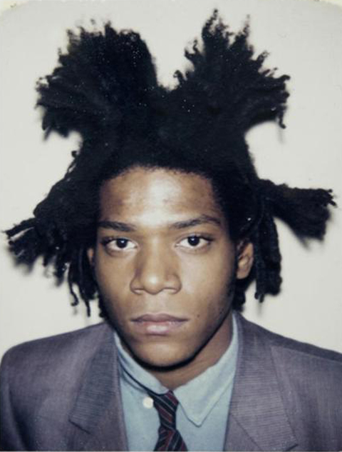
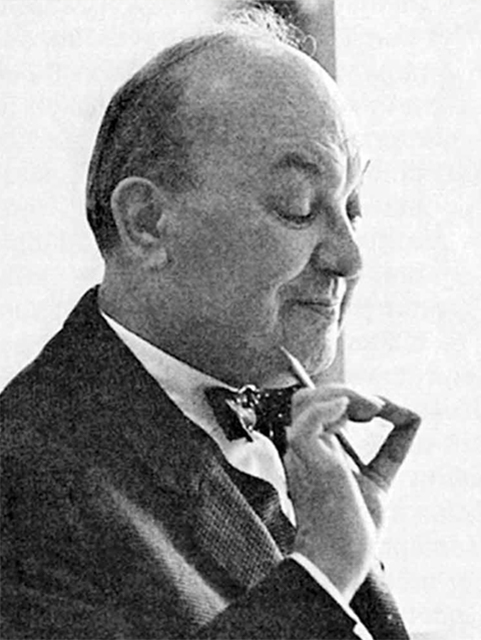

Art
Artists
Salvador Dalí
Mistakes are almost always of a sacred nature. Never try to correct them. On the contrary: rationalize them, understand them thoroughly. After that, it will be possible for you to sublimate them.Brainy Quote (brainyquote.com)
Frida Kahlo
I paint my own reality. The only thing I know is that I paint because I need to, and I paint whatever passes through my head without any other consideration.Brainy Quote (brainyquote.com)
Jean-Michel Basquait
The more I paint the more I like everything.Brainy Quote (brainyquote.com)
Design
Designers
David Carson
I literally cannot work without music.Brainy Quote (brainyquote.com)
Neville Brody
People think that digital language is a fixed language, but it's not: it's very fluid. It's like I'm doing a painting where the paint refuses to dry.A-Z Quotes (azquotes.com)
Susan Kare

And with it all, good design's not about what medium you're working in, it's about thinking hard about what you want to do and what you have to work with before you start.A-Z Quotes (azquotes.com)
Engineering
Engineers
Linus Torvalds
Most good programmers do programming not because they expect to get paid or get adulation by the public, but because it is fun to program.Brainy Quote (brainyquote.com)
Tim Berners-Lee
The Web as I envisaged it, we have not seen it yet. The future is still so much bigger than the past.Brainy Quote (brainyquote.com)
Håkon Wium Lie
In the near future, the web is going to be the master copy of human knowledge. We need to figure out ways to use that knowledge.Lib Quotes (libquotes.com)
Typography
Typographers
Matthew Carter
As the saying goes, type is a beautiful group of letters, not a group of beautiful letters.A-Z Quotes (azquotes.com)
Jan Tschichold
Perfect typography is more a science than an art.A-Z Quotes (azquotes.com)